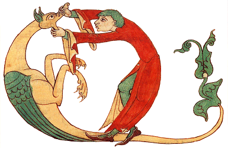

L'Art du
Facteur d'Orgues
Dom François BEDOS de CELLES
Présentation.

L'Art du
|
|
 facteur d'orgues au monde n'a jamais entendu parler de Dom BEDOS et de son ouvrage « L'Art du Facteur d'Orgues », écrit de 1766 à 1778 ? Le livre est si célèbre qu'en faire la critique est devenu aujourd'hui presque malséant ou outrageux envers un auteur auquel on se doit d'avoir un respect doctrinal, voire religieux... À contrario, je ne connais que bien peu de gens qui ont lu en totalité et avec l'assiduité requise cette bible de l'orgue. J'ai souvenir - comme beaucoup sans doute - l'avoir mille fois parcouru (sans forcément tout comprendre...) avec la fièvre de l'apprenti facteur d'orgues que j'étais alors, et que je suis resté. Mais j'ai fini par comprendre ; il m'a fallu pour cela étudier...
UEL Si je reste un ardent défenseur de la version papier classique - tant parce qu'elle apporte à mon sens une facilité de lecture que ne peut donner celle sur un écran, que par la beauté de l'ouvrage en lui même - il n'en reste pas moins que les 1485 articles de l'édition originale de « L'Art du Facteur d'Orgues » sont comme prédestinés à être numérisés car ne dépassant que très rarement deux pages complètes de texte et faisant sans cesse appel les uns aux autres, ou, plus encore, aux figures des planches. L'on prend ici conscience que si Ted NELSON fut, dans les années soixante, le principal inventeur de la notion d'hypertexte, Dom BEDOS - et les encyclopédistes avant lui - avaient déjà une pratique courante du renvoi, tant à l'image qu'au texte et qu'ils furent donc en cela des précurseurs dans le domaine du multimédia.
Dans ce contexte, force m'est de reconnaître que je ne fus pas le premier à me douter que l'ouvrage du bénédictin se prêterait particulièrement à sa numérisation informatique de façon à pouvoir être consulté souris en main. On surfera désormais non seulement sur la toile mais aussi (l'eut-il imaginé ?) sur Dom BEDOS (..!).
Malgré la difficulté de faire reconnaître automatiquement par une machine les caractères du XVIIIe siècle, j'ai tenu - pour commencer - à numériser en premier le texte original et à ne pas partir des éditions postérieures tant de Hamel (1849) que de Guédon (1905). Les corrections qui ont été faites sont minimales ; aussi ai-je conservé avec beaucoup de plaisir l'orthographe variante (et pour moi si colorée) du XVIIIe siècle et l'enrichissement des caractères (gras, italique, souligné) du texte original. Les noms communs qui avaient une majuscule l'ont conservé, les « et » sont restés « & » et, bien entendu, je n'ai pas touché aux imparfaits ni aux conditionnels en « oi » que nous avons remplacé par « ai ».
Par contre je me suis trouvé face au problème des « s » en forme de « f » dont nous ne possédons plus aujourd'hui le caractère dans nos ordinateurs (!). J'ai tranché en les remplaçant par notre forme contemporaine, un peu à contrecœur mais de façon définitive pour des raisons de compatibilité des tables de caractères informatiques... De même, j'ai systématiquement traduit les nombres contenant les chiffre 1 et 0 par nos caractères modernes afin de permettre aux navigateurs à lecture vocale de les reconnaître plus facilement. Ainsi, 10 pieds seront bien lus tel quel et non pas comme les lettres « I » et « o » successives comme c'est le cas dans l'original. J'ai aussi inclu les addenda et corrigenda de l'époque dans le texte afin de simplifier la lecture, fut-elle hypertextuelle. J'ai enfin systématiquement traduit dans le système métrique les mesures exprimées dans la forme de l'ancien régime ; cette traduction est faite en vert et placée entre crochets, immédiatement après avoir été énoncée dans l'ancien système.
J'ai enfin et surtout rajouté la dimension multimédia qu'apporte l'hypertexte et ce fut là une chose aisée car tout s'y prête.
Les figures des planches ont été numérisées de façon totalement indépendante afin de clarifier la lecture sur l'écran (toujours trop petit) et d'accélérer le temps de téléchargement. Je n'ai pas respecté les échelles originales car les définitions d'écran sont trop variables d'un ordinateur à l'autre pour que cela ait vraiment un sens. J'ai donc systématiquement opté pour des figures les plus grosses possible, sachant que les définitions d'écran sont amenées à augmenter (et donc les mêmes figures à diminuer...). Partant du principe que la définition d'écran la plus courante actuellement est de 800 × 600 pixels, j'ai, dans la mesure du possible, essayé d'éviter qu'il soit nécessaire d'utiliser le défilement (horizontal ou vertical) pour visualiser une figure. Mais cela n'a pas été sans mal car certaines figures sont très allongées, particulièrement dans le sens vertical et doivent tout de même être numérisées avec assez de détails pour être comprises. J'espère avoir fait au mieux mais reste ouvert à toutes critiques objectives pouvant améliorer cette numérisation.
Lors de la première mise en ligne, j'ai présenté le texte en séparant horizontalement l'écran en deux au moyen d'une frame. Ce type d'affichage possède le gros avantage de visualiser texte et figures sur un même écran sans plus de préoccupation. Par contre, il implique, une fois encore, de posséder un écran suffisamment grand ou d'un navigateur Web capable de ce débarrasser de boutons de commandes inutiles. Il n'est pas dans ma nature de faire l'apologie de la firme Microsoft®, bien au contraire... Toutefois, force est de constater qu'Internet Explorer® est ici mieux conçu que Netscape® en permettant, d'une simple touche ( [F11] sur les PC), de se débarrasser du superflu en conservant l'essentiel.
Il y a toutefois une autre façon de visualiser le texte et les figures, c'est d'éviter les frames en affichant texte et figures dans des fenêtres indépendantes. L'avantage est que l'on gagne beaucoup de place (donc de confort) sur l'écran ; l'inconvénient est que les fenêtres se superposent souvent assez malencontreusement et qu'il est souvent difficile, voire pénible, de les disposer convenablement. Chacun surfera maintenant selon sa préférence en choisissant l'une au l'autre méthode accessibles depuis la page d'accueil de l'ouvrage.On me pardonnera sans doute d'avoir commencé à publier la traduction de « L'Art du Facteur d'Orgues » sur la toile avant d'avoir fini de numériser la totalité de l'œuvre. Aussi, seule la première moitié de la première partie de cet immense ouvrage (qui en comporte quatre) est actuellement disponibles sur le réseau. Il résulte de ce manque, la provocation de la fameuse Erreur 404 (fichier non trouvé) quand on clique sur la presque totalité des liens, qui sont programmés, mais ne peuvent aboutir car le texte n'est pas encore disponible. Comme il est assez aisé de gérer cette erreur, vous aurez donc souvent l'occasion de rencontrer le marteleur de la planche 65...
Il y a là une réelle volonté de ma part de faire œuvre commune car la mise en place d'un tel ouvrage sous cette forme ne peut se faire par une seule personne ; aussi ce travail doit-il être soumis à la critique de plusieurs « béta-testeurs » afin de toujours tendre à un rendu le plus qualitatif possible. À ce sujet, je dois ici publiquement remercier Marc Leuridan, facteur d'orgues belge, qui fut le premier à mettre en ligne des extraits du traité bien avant que j'y songe moi-même. Frédéric Chapelet a corrigé des liens défectueux et m'a très avantageusement conseillé pour la transcriptions numérique des valeurs de l'ancien régime. Francisco Blanes a trouvé des fautes dans la préface alors que le français n'est pas sa langue maternelle (ce qui prouve bien qu'il s'en trouve encore quelques-unes que je n'ai su déceler). Raymond Joly a relu la préface avec une attention et une méticulosité digne des plus grands alors qu'il ne possède pas l'ouvrage. Les fautes qu'il a pu me montrer le furent par sa seule connaissance de la langue du XVIIIe siècle et ses remarques m'ont ouvert des horizons que je n'aurais jamais pu imaginer.
Mais je serai injuste si je ne citais pour finir le travail d'Éric Padieu pour qui ma reconnaissance va tout particulièrement. En effet, alors que l'avancée de la publication du texte du bénédictin sur la toile s'est, ces derniers mois, largement fait attendre, Éric a courageusement pris son clavier et commencé à taper un nombre conséquent de pages de la deuxième partie de l'ouvrage en respectant de surcroît scrupuleusement les consignes que je me suis fixé et en sachant parfaitement que son travail serait entièrement bénévole et utilisable librement par autrui.
Si d'aucuns se sentent, comme eux, le cœur d'aller plus loin en désirant me donner « un p'tit coup d'main » pour les opérations - fastidieuses - de scannage, d'OCR ou de correction du texte, voire pour simplement me soumettre des idées, critiques et autres propositions, qu'ils n'hésitent pas à me le faire savoir car chaque apport extérieur, fut-il minime, sera toujours le bienvenu pour peu qu'il soit formulé.
Un peu de patience sera donc nécessaire à l'internaute organologue avant qu'il puisse profiter pleinement de ce travail qui demande beaucoup de temps à sa mise en place, tant à cause de la multiplicité des liens qu'il faut spécifier manuellement, que par la correction et les nombreuses fragmentations en petits fichiers qu'impose la division en articles de ce traité.